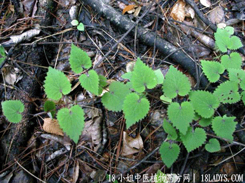

(本文解释权归中药材天地网兄弟站-18小姐中医植物药方网所有,如需转载请注明出处)

古籍名：活血丹《草目拾遗》
别名：驳骨消、通骨消、金钱艾。
植物名：连钱草。
生长环境：本品喜生长于比较潮湿的土地上。
分布：江苏、湖北、湖南、陕西、广东、四川、云南等省有分布，广东有栽培的。
入药部分：全草。
采集期：夏、秋。
入药部分：全草。
采集期：夏、秋。
自采地点：野郊、味辛、气香。
功能：祛风消肿、散瘀止痛。
主治、用量和用法：1、骨节肿痛：干用5钱至1两，为末，煮酒敷患处；2、跌打瘀积，配伍用。
验方：（治跌打积瘀方）透骨消1两，泽兰5钱，入地金牛根5钱、大小还魂各5钱、毛射香5钱，寮刁竹5钱、清水四碗，煎成易碗服。或将上药为末，用酒调匀煮惹，敷患处。
（方解）透骨消，古称七叶草，《中国药用植物图鉴》称为活血丹，具说能治跌打，除骨痛......。本方用之，以入骨去瘀，配泽兰入血散瘀，入地金牛、毛射香祛风行气，寮刁竹祛风止痛，大小还魂通血脉，组成行气、活血、疗跌打积瘀之剂，内服及外用咸宜。
（方歌）跌打积瘀透骨消，大小还魂共寮刁，泽兰毛射金牛入，煎服还敷伤自疗。
(本文解释权归中药材天地网兄弟站-18小姐中医植物药方网所有,如需转载请注明出处)